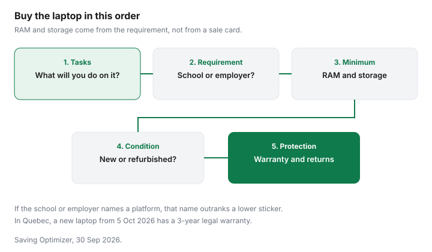

Technology · Canada
Buying a Laptop in Canada Without Overpaying: Specs for Home, School and Work
To avoid overpaying for a laptop in Canada, start from the tasks and any written school or employer requirement, not from a doorbuster price. In Quebec, a new laptop bought from a merchant from 5 October 2026 has a 3-year warranty of good working order. A laptop sale fails in two familiar ways. The machine is more computer than the week needs, or it is a doorbuster that cannot run the one program school or work requires. This page is a use-case checklist. It does not rank models, and it does not state a gigabyte figure as a national minimum. Timing is on the tech timing guide. A certified refurbished machine is a different contract, on the refurbished guide.
Disclosure: Electronics retailer offers are an offer type. Saving Optimizer may earn a commission if a partner link is added later. No partnership is claimed. A retailer link does not change RAM, a warranty or a return window. Education only.
Key takeaways
- Start from the tasks and from any written school or employer requirement. Do not start from a doorbuster price.
- This guide does not set a universal RAM or storage number. Record the minimum the software or the school publishes.
- Chromebook, Windows and Mac are platform questions: which apps must be installed, and who administers the account.
- In Quebec, a new laptop or desktop bought from a merchant from 5 October 2026 has a 3-year warranty of good working order.
- Software support years belong on the maker's page. This guide does not invent a lifespan.
What you actually use it for
List a normal week before you list specs. A browser, a video call, a tax PDF and a photo export are different loads.
If a student is the user, get the school's software list in writing. If an employer issues the laptop, do not buy a personal machine to duplicate it. If the employer expects you to use your own, ask which operating system and which security tools are required. A machine that cannot join the work account is not cheap. It is the wrong machine.

RAM, storage and battery
RAM is where the open work sits. Storage is where the files sit.
A machine can have a lot of one and too little of the other. Write the figure the school, the employer or the software publisher prints, and treat a sale card that omits RAM as incomplete. Cloud storage can hold files, and it is a subscription, not free space in the laptop. The price-tracking guide is a method for watching a specific configuration, not a reason to ignore the spec.
Battery life on a spec sheet is the maker's test, not your day. Ask what the test assumes, and assume a video call on Wi-Fi will not match a video-playback number. If you cannot plug in at school or on a train, the battery is a requirement, not a nice line. This page does not quote an hour figure.
| Use | RAM and storage | Processor, battery, screen |
|---|---|---|
| Browsing and school | The school's written minimum, if it publishes one. Storage for local files plus whatever cloud the class uses | A processor the school accepts. Battery for the longest day without a plug. A screen you can read for a class |
| Office and video calls | Enough RAM to keep the call and the document open together. Storage for the files you are required to keep locally | A camera and microphone you have tested. Battery for a meeting block. A screen size you can share a document on |
| Photo editing | The photo app's published minimum, not the browser-only machine | A colour-capable screen if colour is the work. Battery matters less if you edit at a desk |
| Gaming | The game's published minimum and recommended lines, for the games you play | A processor and graphics class the game names. A refresh rate only if the games you play use it. Heat and fan noise in the room you use |
Chromebook vs Windows vs Mac
Choose the platform the required software runs on. A Chromebook fits a week that lives in the browser and in a school's Google account.
It does not fit a course or a job that installs Windows-only or Mac-only software. Windows is the usual requirement when a workplace names it. A Mac is the requirement when the creative tools or the household's other devices are already on that platform and the files need to move. None of those sentences is a ranking, and none is a price.
Also ask who can sign in. A school-managed Chromebook and a personal laptop are different devices. A work account that cannot be installed on a personal machine means the employer should be providing the computer. Confirm that with the employer before you spend.
Black Friday and back-to-school timing
Classes in September come before Black Friday. If the student needs the laptop on the first day, November is late.
If the current machine still gets security updates and the class list is light, waiting for Friday 27 November 2026, or for Boxing Day on Saturday 26 December 2026, is a stock decision, not a duty. Back-to-school flyers are a season, not a verified percent off. This page does not quote one.
A doorbuster laptop is a configuration. Compare RAM, storage and the processor class to the row in the table above, not to the size of the discount. Keep a price log on the exact configuration, and read the price-adjustment guide before you assume a December drop can be claimed on a November receipt. Check the retailer.
| Check | New doorbuster | Refurbished |
|---|---|---|
| Configuration | RAM, storage and processor match the task list | Same match, plus the grade in writing |
| Battery | The maker's warranty terms for the battery | Battery health or cycle count disclosed. If it is not, ask |
| Return window | Check the retailer, including final sale | Check the seller. Do not assume it matches a new unit |
Warranty and support
The manufacturer warranty is on the maker's page for that model. Check it, including what the battery warranty covers.
In Quebec, checked 29 Sep 2026, quebec.ca says a new laptop or desktop bought or leased from a merchant from 5 October 2026 carries a warranty of good working order for 3 years from delivery. It is automatic and free, and the duration must be shown near the price. The reasonable-durability warranty still applies. The Quebec warranty guide has the steps. A store plan is optional. Read it against the extended-warranty guide before you add it.
Since 5 October 2025, the Office de la protection du consommateur says merchants and manufacturers must say whether parts, repair services and repair information are available, partly available, or not available. They can step back from that availability only with a written warning before the sale. That rule is about parts and information. It is not the same as the 3-year good-working-order warranty, and it can apply to a used good bought from a merchant. A law-firm summary of Bill 29 is on Osler's site. The Office's page is the one to use if you need to complain.
| Question | Where the answer lives | What not to assume |
|---|---|---|
| Operating-system updates | The maker's support page for that model | A sale card's "lasts for years" |
| Security updates | The same page, for the operating system you will run | That a browser update equals a system update |
| Repair parts | The maker's disclosure, and in Quebec the Office de la protection du consommateur | That a sealed machine can be repaired at a fair parts price. The Office says the price must be reasonable |
Checklist
You are ready to pay when you can name the tasks, the required platform, the RAM and storage the requirement calls for, the return window, and the warranty that applies in your province. If you are in Quebec and the laptop is new from 5 October 2026, look for the 3-year duration near the price. If the unit is refurbished, stop and use the refurbished checklist before you treat it as the same warranty.
Sources & date stamps
- Quebec, Garantie de bon fonctionnement, checked 29 Sep 2026. New laptop or desktop bought or leased from a merchant from 5 October 2026: 3 years from delivery. Automatic and free. Duration shown near the price. Reasonable-durability warranty still applies.
- Office de la protection du consommateur, droit à la réparation, checked 29 Sep 2026. Since 5 October 2025, merchants and manufacturers must indicate whether parts, repair services and repair information are available, partly available, or not. A written warning before the sale is how they decline. The availability guarantee can cover a new or used good bought from a merchant.
- Osler, Hoskin & Harcourt LLP, "From purchase to repair: how Bill 29 reshapes consumer rights in Québec," 30 July 2025, a law-firm summary of amendments the firm said would take effect on 5 October 2025. Use the Office's pages for the consumer steps.
- Competition Bureau ordinary-price guidelines, dated 16 October 2009, checked 29 Sep 2026. Volume test and time test. The page says the guidelines are under review.
Frequently asked questions
How much RAM do I need in a laptop in 2026?
Write the minimum your school, employer or software publisher prints, then buy at least that. This guide does not state a universal gigabyte figure, because no maker page is cited here for one. Browsing and a video call need less than photo editing or a game, and the course list is a better source than a sale card. If the school is silent, test the tasks you do on a machine you can return.
Is a Chromebook enough for school?
It is enough when the school uses a browser and a Google account and does not require software a Chromebook cannot install. It is not enough when a course lists a Windows-only or Mac-only program. Ask the school for the written requirement before you treat a low sticker as a fit, because the platform is the question.
Should I buy a laptop on Black Friday or wait?
Buy in November if classes or work start before Boxing Day and the configuration you need is in stock. Wait if the machine you have still receives security updates and you can miss a few configurations. Black Friday 2026 is Friday 27 November and Boxing Day is Saturday 26 December. This page does not quote a percent off for either weekend.
Is a refurbished laptop a good idea?
It can be, when the seller states the grade, the battery condition, the warranty and the return window in writing. This page does not rank refurbished sellers. A new machine and a refurbished one do not carry the same Quebec warranty of good working order, which quebec.ca limits to new goods. The refurbished guide is the checklist.
What warranty applies to laptops in Quebec?
For a new laptop or desktop bought or leased from a merchant from 5 October 2026, quebec.ca sets a 3-year warranty of good working order, automatic and free, from the delivery date. The reasonable-durability warranty still applies. Parts and repair information have a separate availability rule. Check the Office de la protection du consommateur for a used or refurbished machine.
Researched and drafted with AI assistance and fact-checked against official Canadian sources. How we create content.